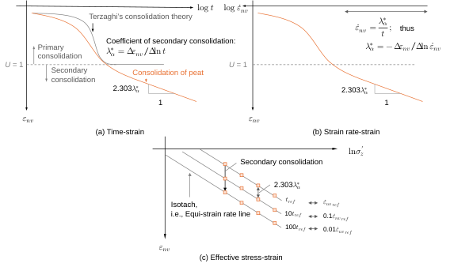
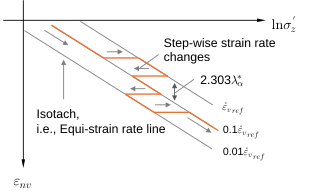
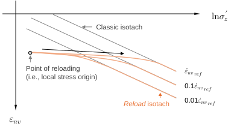

Ch3.3.2
Secondary consolidation and isotach concept

Soft soils including peats exhibit delayed compression, even after the dissipation of measurable excess pore-water pressure. Such time-dependent behaviour is referred to as secondary consolidation. For peats, this process follows a log-time linearity, as depicted in Fig. 3.3.3 (a). The classical consolidation theories presented in the previous section, where the mechanical property of soil is assumed to be elastic or elasto-plastic, cannot account for this residual time-dependency. Also, secondary consolidation is especially significant in peat (Long et al., 2023).
The coefficient of secondary consolidation is therefore introduced as its mathematical representation:
According to Mesri et al. (2007), a body of published data for peats indicates the relationship in Eq. (3.3.21).
In constitutive modelling, however, the use of time $t$ is undesirable, as it lacks objectivity; it is a descriptive parameter tied to boundary conditions. Instead, the coefficient of secondary consolidation is expressed in terms of an invariant state parameter, the volumetric strain rate. Accordingly, Eq. (3.3.19) can be transformed as:
This indicates that $\dot\varepsilon_{nv}$ is inversely proportional to $t$ (i.e., $\partial\log t=-\partial\log\dot\varepsilon_{nv}$) during secondary consolidation, meaning the log-linearity is maintained when test data are plotted against strain rate as illustrated in Fig. 3.3.3 (b). Thus, the coefficient of secondary consolidation is refined as:
In the above transformation, the total volumetric strain is replaced by its viscoplastic component as there are essentially no changes in effective stress state, and thus no elastic straining, during secondary consolidation.
When secondary consolidation is plotted against effective stress, it becomes evident that the effective stress–strain relationship is no longer unique as illustrated in Fig. 3.3.3 (c). The effective stress–strain states are characterised by strain rate, forming a series of isotaches, i.e., equi-strain rate lines. In other words, secondary consolidation is merely a reflection of the strain-rate dependency of the effective stress-strain relationship. Isotaches are more clearly observed in multi-stage Constant Rate of Strain (CRS) tests, as schematised in Fig. 3.3.4. A common and simplified interpretation derived from experimental data is that the isotaches are arranged log-linearly and in parallel on the effective stress–strain plane.

The coefficient of secondary consolidation is often adopted to define the spacing of isotaches, especially for peats (e.g., Den Haan and Kamao, 2003; Tanaka and Hayashi, 2013; Miki et al., 2015; Yamazoe et al., 2025). Meanwhile, Watabe et al. (2012) claims that secondary consolidation is convergent for clays, based on long-term consolidation test data over 30–100 days, thereby posing a limit in applying the coefficient of secondary consolidation. Models incorporating such convergent creep characteristics are available in, for instance, Imai et al. (2003) and Watabe et al. (2012).
The concept of isotach has been recognised as a fundamental notion in the analysis of long-term behaviours of fine-grained soils (e.g., Suklje, 1957; Leroueil, 1987; Yin and Graham, 1994; Imai et al., 2003; Hawlader et al., 2003; Leroueil, 2006; Kellen et al., 2008; Degago et al., 2011; Freitas et al., 2011; Kongkitkul et al., 2011; Watabe et al., 2012; Tanaka and Tsutsumi, 2016; Yuan and Whittle, 2018; Dadras-Ajirloo et al., 2023 for clays; Den Haan and Kamao, 2003; Tanaka and Hayashi, 2013; Miki et al., 2015; Yamazoe et al., 2025 for peats). Although the term isotach strictly denotes the uniqueness of the effective stress–strain–strain rate relationship, this is sometimes violated. Den Haan and Kamao (2003) found that equi-strain rate lines during reloading are curved and diverge from a local stress origin (Fig. 3.3.5), thereby losing their global parallelism. They proposed a model reflecting this, termed reload isotach. Such an interpretation is consistent with Y2-type plasticity discussed in Chapter 3.2.3 (see Fig. 3.2.10).

Note that, for coarse-grained soils including sands, the isotach framework is invalid. Tatsuoka et al. (2002) and Di Benedetto et al. (2002) developed a model for their peculiar viscosity, referred to as TESRA (temporary effects of strain rate and acceleration).